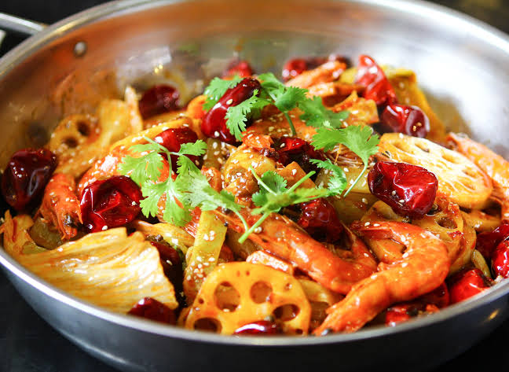
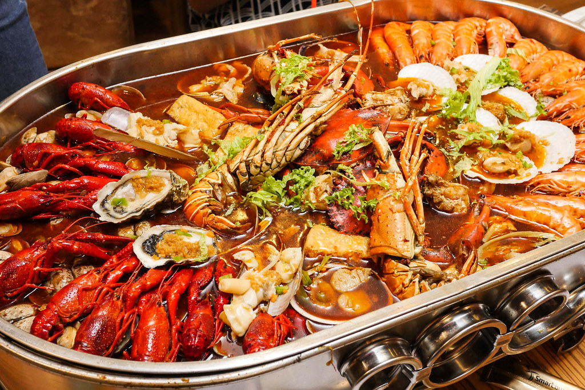
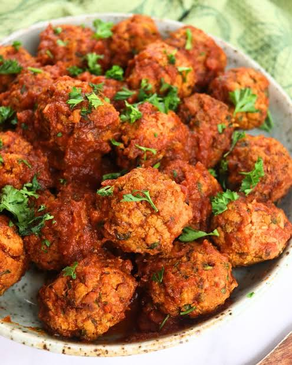

ນະມັດສະເຕ
ໝາລ່າເຜັດລິ້ນຊາ ແຊບເຖິງໃຈ!
ຄົ້ນຫາຊຸດຫມໍ້ໄຟ ແລະ ວັດຖຸດິບ
ມານັ່ງກິນທີ່ຮ້ານໄດ້ເລີຍ
ໝໍ້ໄຟຮ້ອນໆ ນ້ຳຊຸບໝາລ່າເຂັ້ມຂົ້ນ
SPICY · NUMBING · DELICIOUS
ຊຸດໝາລ່າ
ຊຸດໝາລ່າ
ຈັດເຕັມ!
Mala Signature Hotpot Set
ເລີ່ມຕົ້ນ ₭ 45,000
OUR HOTPOT MENU
ເບິ່ງທັງໝົດ
ເມນູຫມ່າລ່າຍອດນິຍົມ
ທັງໝົດ
ເມນູຍອດນິຍມ
ນ້ຳຊຸບ
ຊີ້ນ
ຜັກ ແລະ ປະເພດລູກຊີ້ນ
ເມນູຍອດນິຍມ
Mala Signature Hotpot Set
ຊີ້ນລວມ · ຜັກສົດ · ນ້ຳຊຸບຫມ່າລ່າ
₭ 79,000

Beef & Pork Set
ຊີ້ນງົວ · ຊີ້ນໝູສະໄລສ໌
₭ 95,000

Stir-fried Mala
ຫມ່າລ່າເຜັດຊາ
₭ 55,000

Seafood Hotpot Set
ກຸ້ງ · ປາໝຶກ · ຫອຍ · ປູ
₭ 299,000

Meatball & Tofu Platter
ລູກຊີ້ນ · ເຕົ້າຮູ້ · ເຫັດ
₭ 59,000

Fresh Vegetable Platter
ຜັກສົດ · ເຫັດ · ໝາກເລັ່ນ · ອະໂວຄະໂດ້
₭ 45,000